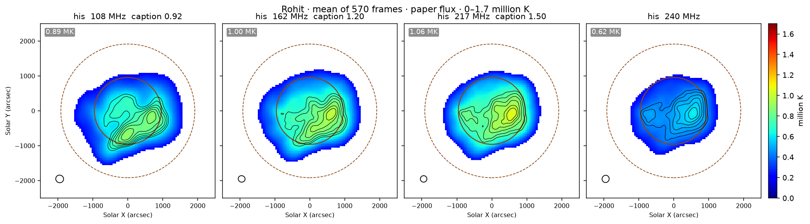
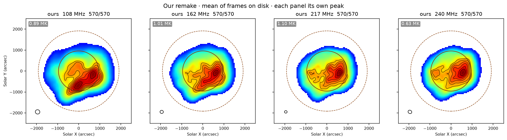
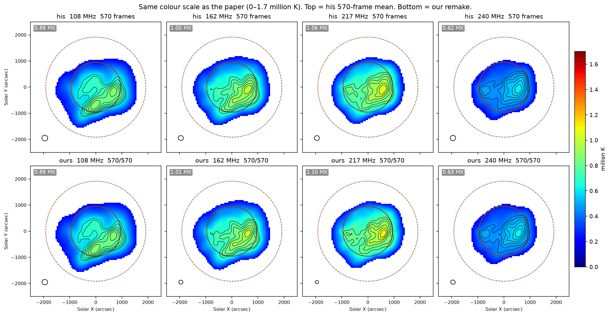
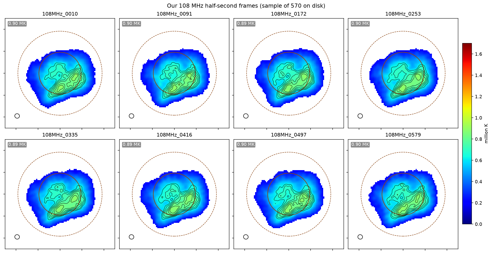
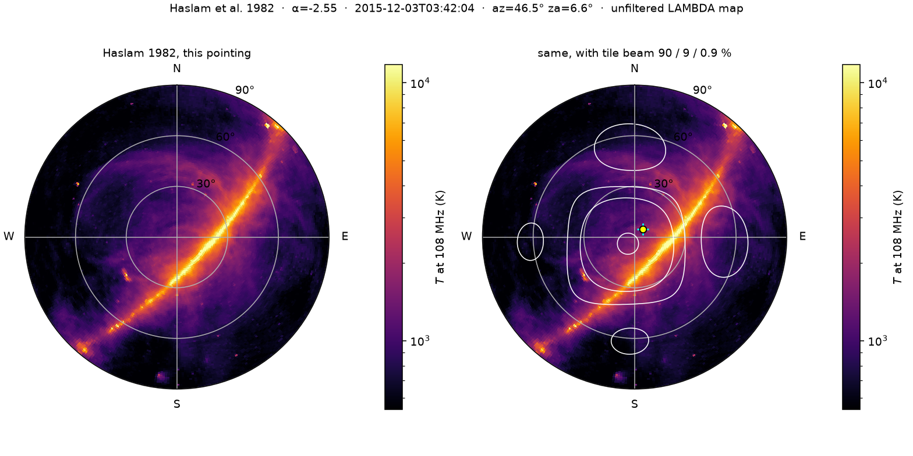
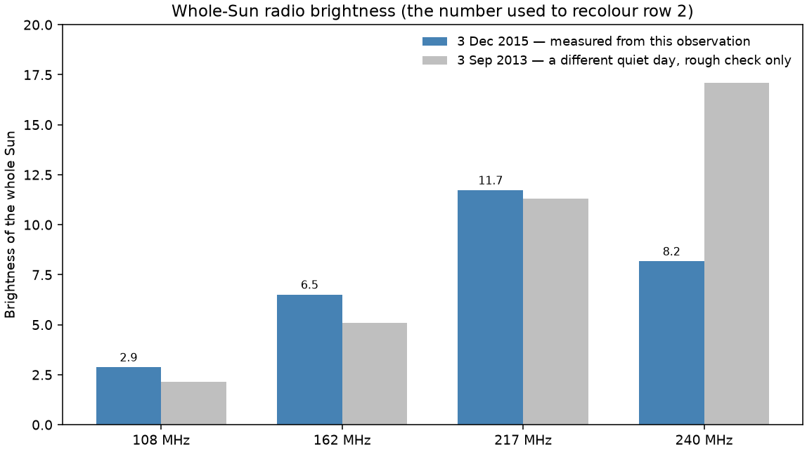
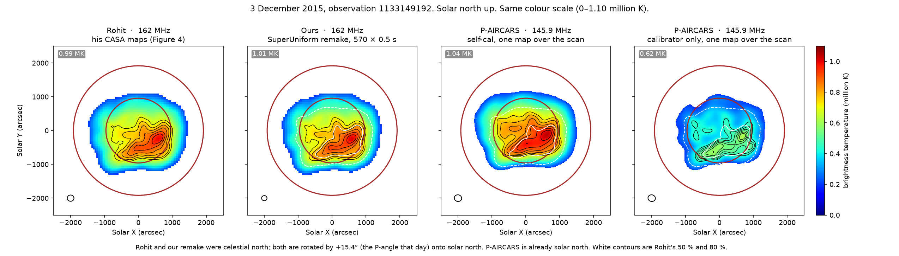
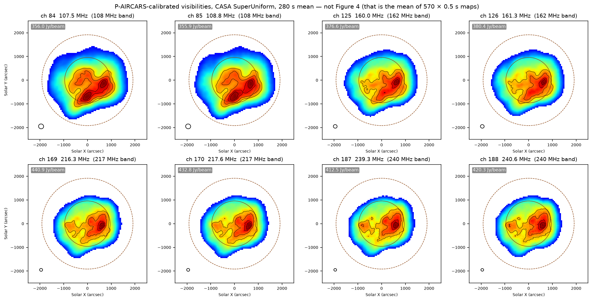
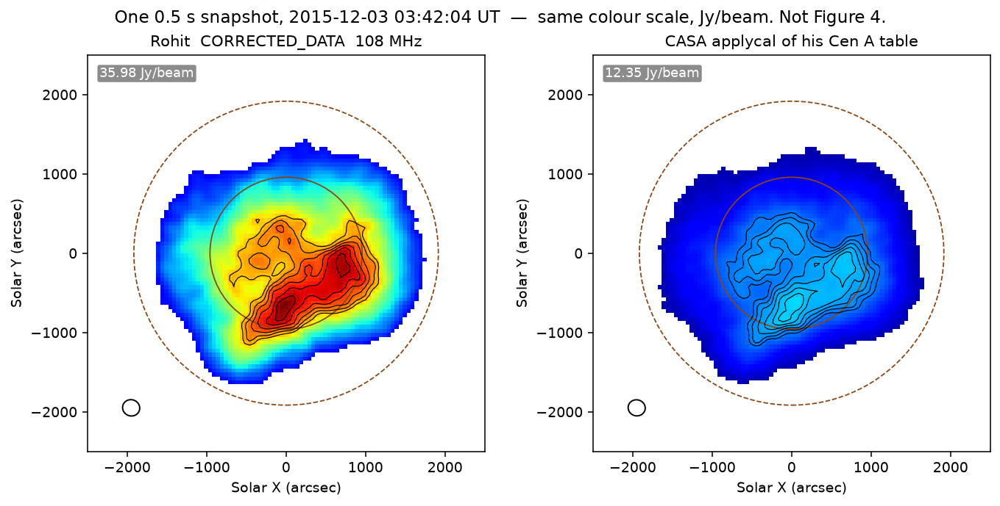

3 December 2015 · 03:39–03:44 UT
1133149192
- Start
- 2015-12-03 03:39:44 UT
- Length
- 296 s
- Noon pick
- 1133149792
- P-angle
- +15.4°
- CASA
- SuperUniform, 570 × 0.5 s
- P-AIRCARS cal
- 3C444 · 1133161488

Solar north up. Peaks at 108 MHz: 0.89 / 0.89 / 0.82 / 0.83 million K. At 162 MHz: 0.99 / 1.01 / 0.88 / 0.90. At 217 and 240 MHz P-AIRCARS is noise.

Rohit, mean of 570 frames. Peaks 0.89 / 1.00 / 1.06 / 0.62 million K (paper captions 0.92 / 1.20 / 1.50 at 108 / 162 / 217 MHz).

Our remake, mean of 570 SuperUniform frames. Peaks 0.89 / 1.01 / 1.10 / 0.63 million K. Each panel scaled to its own peak.

Rohit (top) and our remake (bottom), 0–1.7 million K, celestial north as in the FITS.

Ours minus Rohit. Peak |Δ| 0.01 / 0.03 / 0.05 / 0.02 million K. Red: we are hotter.

MWA (Rohit’s frames, Mohan then mean), FORWARD, AIA 193. MWA peaks 0.89 / 1.00 / 1.06 million K; FORWARD 1.66 / 1.69 / 1.70 million K.

108 MHz, sample of the 570 half-second frames. Peak about 0.90 million K on each.

162 MHz, sample of the 570 half-second frames.

217 MHz, sample of the 570 half-second frames.

240 MHz, sample of the 570 half-second frames.

Haslam et al. 1982 at this pointing, 3 December 2015 03:42 UT. Galactic plane is close; Sun marked on the right.

Whole-Sun flux at this pointing: 2.9 / 6.5 / 11.7 / 8.2 solar flux units at 108 / 162 / 217 / 240 MHz (Haslam 1982 sky). Grey: Oberoi 2013 table, a different day.

162 MHz (Rohit, remake) against P-AIRCARS at 145.9 MHz (pair 113–114). Solar north up.

P-AIRCARS-calibrated visibilities, CASA SuperUniform, 280 s mean, Jy/beam. Not the 570-frame T_B mean.

One 0.5 s snapshot, 03:42:04 UT, 108 MHz, same Jy/beam scale. Rohit CORRECTED_DATA 36 Jy/beam; CASA applycal of his Cen A table 12 Jy/beam.